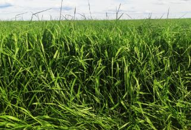
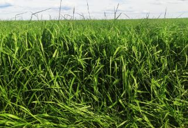
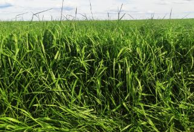

Alta produtividade e boa adaptação em diversas regiões. Se destaca dos demais materiais pela sua rusticidade e elasticidade no manejo com alta produtividade de forragem de boa qualidade. Esta gramínea se adapta a solos arenosos e argilosos, com acidez moderada. Este cultivar é a forrageira tropical mais plantada no Brasil.
Benefícios e Considerações
Se destaca dos demais materiais pela sua rusticidade, adaptabilidade e elasticidade
no manejo.
Requer solos profundos, com boa drenagem no perfil e fertilidade média a alta, para garantir um bom
estabelecimento e
persistência da pastagem, com alta produtividade de forragem de boa qualidade e alta capacidade de
competição a invasoras.
A capacidade de suporte varia entre 1,5 e 2,4 UA/ha nas águas e entre 0,8 e 1,2 UA/ha na seca, em solos de
média fertilidade e bem manejados.
É a melhor alternativa de forrageira resistente às cigarrinhas típicas de pastagens, como
Notozulia
entreriana, Deois flavopicta, D.
incompleta, D. schach e Aeneolamia selecta. Apresenta resistência por antibiose, reduzindo a sobrevivência e
prolongando a duração do período ninfal.
Material indicado para ILP e ILPF onde é utilizado em consórcio com anuais (milho,
sorgo, milheto), para pastejo pós-colheita das culturas principais e ou produção de palhada para
cobertura. Outra finalidade em culturas perenes, como o café, é o plantio na entrelinha, para conter
erosão, perda de umidade e controle de plantas daninhas.
Esta gramínea se adapta a solos arenosos e argilosos, com acidez moderada, porém, não tolera condições de
encharcamento.
Informações Técnicas
 
